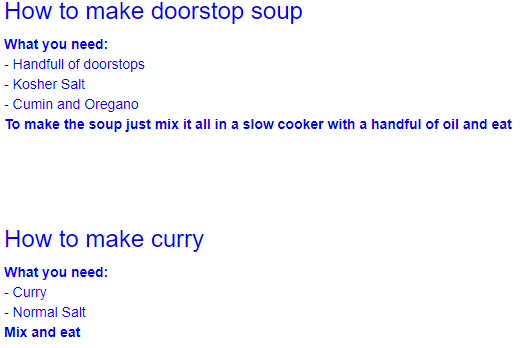

For this first week of CS 460 the tasks (found here)included getting an understanding of a few different front end languages and technologies to use. I eneded up in a much different spot then I thought I would be for this week because I initially started with creating the doorstop site shown on a link below. However I switched routes near the end of the project and decided to make my portfolio page something that I will feel beneficial to be linked on my resume to help showcase myself to potential employers by showing them myself, some code samples, and eventually some projects I have done. Both pages however did use HTML CSS and Bootstrap and incorporated the required assignment parameters.
<div class="container-fluid"> <div class="row"> <div class="col-md-6"><h2><center>Pictures of doorstops</center></h2></div> <div class="col-md-6"><center><h2>Pictures of other things</h2></center></div> </div> </div> <div class = "pic1" <div class="container-fluid"> <div class="row"> <div class="col-md-6"><img src="pictures/stop1.jpg" alt="doorstop" style="width:304px;height:228px;"></div> <div class="col-md-6"><img src="pictures/other1.jpg" alt="doorstop" style="width:304px;height:228px;"></div> </div> <div class="row"> <div class="col-md-6"><img src="pictures/stop2.jpg" alt="doorstop" style="width:304px;height:228px;"></div> <div class="col-md-6"><img src="pictures/other2.jpg" alt="doorstop" style="width:304px;height:228px;"></div> </div> <div class="row"> <div class="col-md-6"></div> <div class="col-md-6"></div> </div> </div>
I also used multiple style sheets and html pages for the different layouts that I played with for different pages.
p {font-size: 16px;} .margin {margin-bottom: 45px;} .margin-2 {margin-bottom: 55px;} .bg-1 { background-color: #1abc9c; /* Green */ color: #ffffff; } .bg-2 { background-color: #474e5d; /* Dark Blue */ color: #ffffff; } .bg-3 { background-color: #2f2f2f; /* White */ color: white; } .bg-4 { background-color: #2f2f2f; /* Black Gray */ color: #fff; } .bg-5 { background-color: green; /* Black Gray */ color: #fff; } .container-fluid { padding-top: 70px; padding-bottom: 70px; } section{ padding-left: 300px; padding-right: 300px; } body { background-color: blue; color: blue; table: white; } .pic1 { text-align: center; padding-top: 50px; padding-right: 30px; padding-bottom: 50px; padding-left: 80px; } .cooking1{ color: blue; text-align: left; } .cooking2{ color: blue; text-align: left; } .contact { text-align: left; }
I added in Navigation bars to both my portfolio and first website page and my landing page of the doorstop site holds a table with information about doorstops and other basic information and pricing of them as shown below.
<div class="container"> <h2>Overview of common doorstops</h2> <table class="table" align="left"> <thead> <tr> <th>Doorstop Type</th> <th>Cost</th> <th>Info</th> <th>URL</th> </tr> </thead> <tbody> <tr> <td>Wundermax Decorative Door Stopper</td> <td>12</td> <td>If you need a basic doorstop I guess buy it</td> <td>https://www.amazon.com/Wundermax-Decorative-Stopper-Surfaces-Original/dp/B010ZIANAI/ref=zg_bs_1069196_1?_encoding=UTF8&psc=1&refRID=AEEEDHDSJ4B23NZEH8Z4</td> </tr> <tr> <td>Tenby Easy-Step</td> <td>12</td> <td>Will make you feel like a real biker</td> <td>https://www.amazon.com/Tenby-Easy-Step-Stops-4-Inch-Nickel/dp/B00VAQT8AG/ref=zg_bs_1069196_3?_encoding=UTF8&psc=1&refRID=AEEEDHDSJ4B23NZEH8Z4</td> </tr> <tr> <td>Rok Hardware 3-1/8" Flexi Spring</td> <td>8.50</td> <td>makes that brwrrewrerwerwerwerwerwe sound when you kick it</td> <td>https://www.amazon.com/Rok-Hardware-Spring-Oil-Rubbed-Bronze/dp/B017TT59X2/ref=zg_bs_1069196_12?_encoding=UTF8&psc=1&refRID=AEEEDHDSJ4B23NZEH8Z4</td> </tr> <tr> <td>5pcs Silicone Wall Protectors</td> <td>6</td> <td>Could be used as clay pidgens when you decide to live without doors</td> <td>https://www.amazon.com/Silicone-Protectors-Adhesive-Handle-Stopper/dp/B00SKK2ZS2/ref=zg_bs_1069196_13?_encoding=UTF8&psc=1&refRID=AEEEDHDSJ4B23NZEH8Z4</td> </tr> <tr> <td>Home Premium Door Stopper</td> <td>8.50</td> <td>Could probably use these as hot wheel ramp. Or to stop a door from closing</td> <td>https://www.amazon.com/Home-Premium-Flexible-Surfaces-Scratching/dp/B01NGYKARV/ref=zg_bs_1069196_6?_encoding=UTF8&psc=1&refRID=AEEEDHDSJ4B23NZEH8Z4</td> </tr> </tbody> </table> </div>
Navigation bars:
<nav class="navbar navbar-inverse"> <div class="container-fluid"> <div class="navbar-header"> <a class="navbar-brand" href="blog.html">Back to Week 1 Blog</a> </div> <ul class="nav navbar-nav"> <li class="active"><a href="index.html">Home</a></li> <li><a href="recipes.html">Doorstop reciepes</a></li> <li><a href="gallery.html">Gallary</a></li> <li><a href="other.html">Contact</a></li> </ul> </div> </nav>
I added lists in a few parts of both of the sites I made as shown below:
<div style="width: 50%; float:left"> <h3>A few Classes I've completed:</h3> <ul style="list-style-type:none"> <li>Programming Languages</li> <li>Dynamic Systems Simulations</li> <li>Open Source Software development</li> <li>Web Application Development</li> <li>Analysis of Algorithms</li> <li>Data Mining and Warehouse</li> <li>Database Management</li> <li>Operating Systems</li> <li>Computer Architecture & Assembly</li> <li>Applied Discrete Mathematics</li> <li>Data Structures</li> </ul> </div> <div style="width: 50%; float:right"> <h3>Some things I can pretend to know what I'm talking about:</h3> <ul style="list-style-type:none"> <li>Full Stack Development with training wheels</li> <li>Arduino Microcontrollers and Raspberry Pi</li> <li>Microsoft SQL Server</li> <li>FTP and SSH clients</li> <li>Googling stuff</li> <li>Slackline</li> <li>Juggling</li> <li>Ubuntu</li> <li>OOP</li> <li>AWS services: IAM, S3, EC2, Lambda, CloudFormation</li> </ul> </div> </div>
<div class="container-fluid"> <div class="row"> <div class = "cooking1"> <div class="col-md-6"><h3>How to make doorstop soup</h3> <dl> <dt>What you need:</dt> <dd> - Handfull of doorstops</dd> <dd> - Kosher Salt</dd> <dd> - Cumin and Oregano</dd> <p><b>To make the soup just mix it all in a slow cooker with a handful of oil and eat</b></p> </div> <div class="col-md-6"> </div> </div> </div> <div class="row"> <div class = "cooking2"> <div class="col-md-6"><h3>How to make curry</h3> <dl> <dt>What you need:</dt> <dd> - Curry</dd> <dd> - Normal Salt</dd> <p><b>Mix and eat</b></p> </div> <div class="col-md-6"> <img src="pictures/curry.jpg" alt="soup" hspace="20" style="width:304px;height:228px;"></div> </div> </div> <h3>Things I like</h3> <ol> <li>Juggling</li> <li>Spicy Roticery chicken</li> <li>other things</li> </ol> </div>